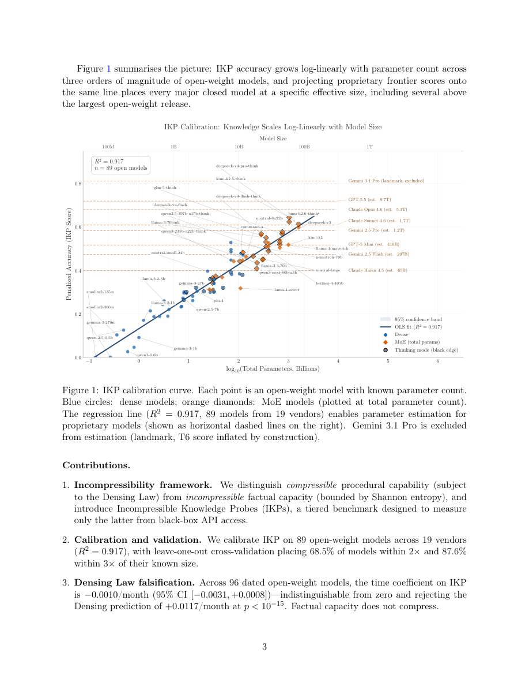

#1
★ 8/10
Incompressible Knowledge Probes: Estimating Black-Box LLM Parameter Counts via Factual Capacity
不可压缩知识探针：通过事实容量估计黑盒LLM参数量

图 Figure · Page 3 of paper
🎯 用知识存储理论推算黑盒LLM参数量的事实基准
A factual benchmark that lower-bounds black-box LLM parameter counts using knowledge storage theory.
| 维度 | 中文 | English |
|---|---|---|
| ❓ 待解决 的问题 |
闭源AI实验室（如OpenAI、Anthropic）不公开模型参数量。现有基于推理成本的估算方法因硬件和部署假设不同，误差超过2倍。目前没有可靠的、仅依赖模型本身的方法从外部估算模型大小。 | Closed-source AI labs (like OpenAI, Anthropic, Google) don't reveal how many parameters their models have. Existing estimates based on inference cost have over 2× uncertainty due to hardware and serving-stack assumptions. There's no reliable, model-intrinsic way to estimate model size from the outside. |
| 💡 解决 的亮点 |
• **信息论下界**：存储F条事实至少需要F/(每参数比特数)个权重，模型"知道多少"直接决定它"至少有多少参数"。 • **IKP基准设计**：1400道跨7级稀有度的事实题，专门剔除可通过推理或架构优化压缩的知识，确保测的是纯粹的参数存储容量。 • **MoE关键发现**：对混合专家模型，总参数量预测事实知识能力(R²=0.79)远优于激活参数量(R²=0.51)。 • **推翻"密化定律"**：事实容量随时间的算法效率提升趋近于零，与Densing Law预测的持续压缩相矛盾。 | • **Information-theoretic lower bound**: storing F facts requires at least F/(bits per parameter) weights — measuring what a model *knows* directly lower-bounds how many parameters it *has*. • **IKP Benchmark**: 1,400 factual questions across 7 tiers of obscurity, carefully designed to exclude facts derivable by reasoning or compressible by architecture tricks. • **MoE insight**: For Mixture-of-Experts models, *total* parameters predict factual knowledge (R²=0.79) far better than *active* parameters (R²=0.51), clarifying a long-debated question. • **Densing Law falsified**: Factual capacity does NOT improve with algorithmic efficiency over time — IKP scores show near-zero temporal drift, directly contradicting the "Densing Law." |
| 🧪 实验 内容 |
在89个开源模型（135M–1600B，来自19家厂商）上标定IKP并做留一法交叉验证，再对188个模型（含GPT-4、Claude、Gemini等闭源模型）进行参数量估算。与基于推理成本的估算方法对比，同时对96个有时间戳的开源模型做时间回归来验证"密化定律"，并对MoE模型分别分析总参数与激活参数的预测力差异。 | The benchmark (IKP) was evaluated on 89 open-weight models from 19 vendors (135M–1,600B parameters) for calibration, and then applied to 188 total models from 27 vendors including proprietary models (GPT-4, Claude, Gemini, etc.). Baselines for comparison include inference-cost-based parameter estimates. Leave-one-out cross-validation was used to test generalization. A temporal regression across 96 dated open-weight models was run to test the "Densing Law" hypothesis. MoE models were analyzed separately comparing total vs. active parameter predictions. |
| 📊 实验 结果 |
89个开源模型标定的对数线性回归达到R²=0.917。留一法交叉验证：中位误差倍数1.59×，68.5%模型估算误差在2倍以内，87.6%在3倍以内。MoE模型：总参数预测R²=0.79，激活参数预测R²=0.51。IKP时间漂移系数−0.0010/月（95% CI [−0.0031, +0.0008]），统计上与零无异，以p<10⁻¹⁵的显著性拒绝密化定律预测的+0.0117/月。主要闭源前沿模型的参数估算与已泄露/传闻数字基本吻合，安全调优模型估算结果视为下界。 | Log-linear calibration achieves R²=0.917 on 89 open-weight models. Leave-one-out cross-validation: median fold error 1.59×, 68.5% of models estimated within 2× of true size, 87.6% within 3×. For MoE models: total parameters R²=0.79 vs. active parameters R²=0.51. Temporal IKP drift: −0.0010/month (95% CI [−0.0031, +0.0008]) — statistically indistinguishable from zero, rejecting the Densing Law's predicted +0.0117/month at p < 10⁻¹⁵. Proprietary model estimates place major frontier models at sizes consistent with leaked/rumored figures, with safety-tuned models treated as lower bounds. |
| 🏁 结论 | IKP提供了一种有理论依据的、仅依赖模型本身的方法估算黑盒LLM参数量，中位误差约1.59倍，优于基于推理成本的方法；同时证明事实知识容量跨代际、跨厂商地与参数量保持对数线性关系，且不会随算法效率的提升而自动压缩。 | IKP provides a principled, model-intrinsic method to estimate black-box LLM parameter counts with ~1.59× median error — tighter than inference-cost approaches — while also demonstrating that factual knowledge capacity scales log-linearly with parameters across generations and vendors, and does not compress with algorithmic improvements over time. |
| 🔗 论文 链接 |
arXiv: 2604.24827v1 · 📥 PDF | |
⚙️ Method · 方法详解
本文推导了一个信息论下界：存储F条事实至少需要F/(每参数比特数)个权重，因此测量模型掌握的事实知识量可以给出参数量的下限。IKP基准包含1400道按7级稀有度分层的问题，从常识到极度冷僻的事实均有涵盖，确保答案无法通过推理得出、也难以被架构优化压缩。在89个开源模型（135M至1600B参数，来自19家厂商）上标定对数线性回归，将IKP准确率映射到参数量。再将此映射应用于188个模型（含主要闭源前沿模型）进行参数估算。
The paper derives an information-theoretic lower bound: since storing F facts requires at least F/(bits per parameter) model weights, measuring factual knowledge gives a floor on parameter count. IKP is a benchmark of 1,400 questions stratified across 7 obscurity tiers — from common to highly esoteric facts — chosen so correct answers cannot be inferred by reasoning alone and are unlikely to compress further with architectural improvements. A log-linear regression is calibrated on 89 open-weight models ranging from 135M to 1,600B parameters across 19 vendors, mapping IKP accuracy scores to parameter counts. This calibration is then applied to 188 models from 27 vendors, including major proprietary frontier models, to produce parameter estimates.
📐 Key Formulas · 关键公式
\[\text{Parameters} \geq \frac{F}{\text{bits per parameter}}\]
💡 存储F条事实所需的最少参数量下界：模型参数量至少等于事实数量除以每个参数能存储的比特数。
The core information-theoretic lower bound: storing F facts requires at least F divided by the bits-per-parameter capacity of the model architecture.
\[\log(\hat{P}) = a \cdot \text{Acc}_{\text{IKP}} + b, \quad R^2 = 0.917\]
💡 对数线性映射：将IKP准确率映射到模型参数量的对数，在89个开源模型上拟合优度R²=0.917。
Log-linear calibration mapping IKP accuracy to log parameter count, achieving R²=0.917 across 89 open-weight models.
🌟 Why It Matters · 为什么重要
随着前沿AI实验室越来越倾向于隐藏模型规模，IKP为研究社区提供了一种无需内部信息即可可靠审计和比较模型规模的工具。同时，它解决了关于规模化的核心争论：事实容量并未饱和，参数规模的提升仍是AI进步不可或缺的维度，而非已被算法效率所取代。
As frontier AI labs increasingly keep model sizes secret, IKP offers the research community a reliable, cost-effective tool to audit and compare model scales without insider access. It also resolves a fundamental debate about scaling: factual capacity is not saturating, meaning parameter scaling remains a necessary (not obsolete) axis of progress even as reasoning benchmarks plateau.